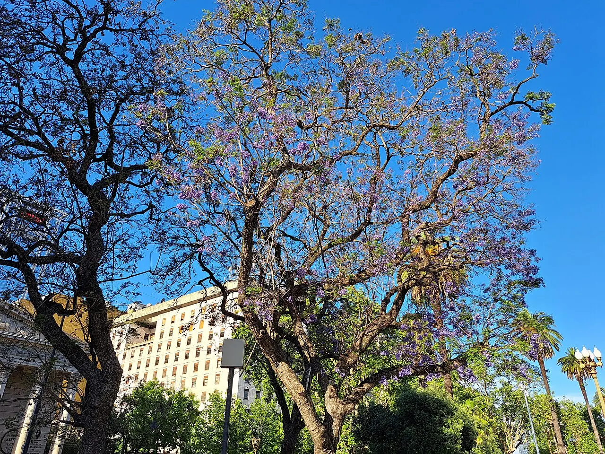
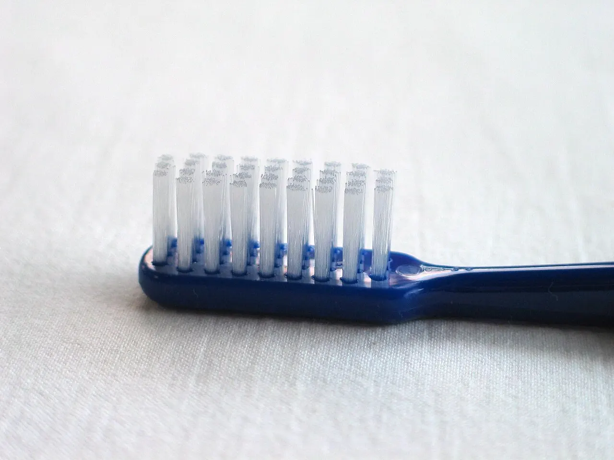
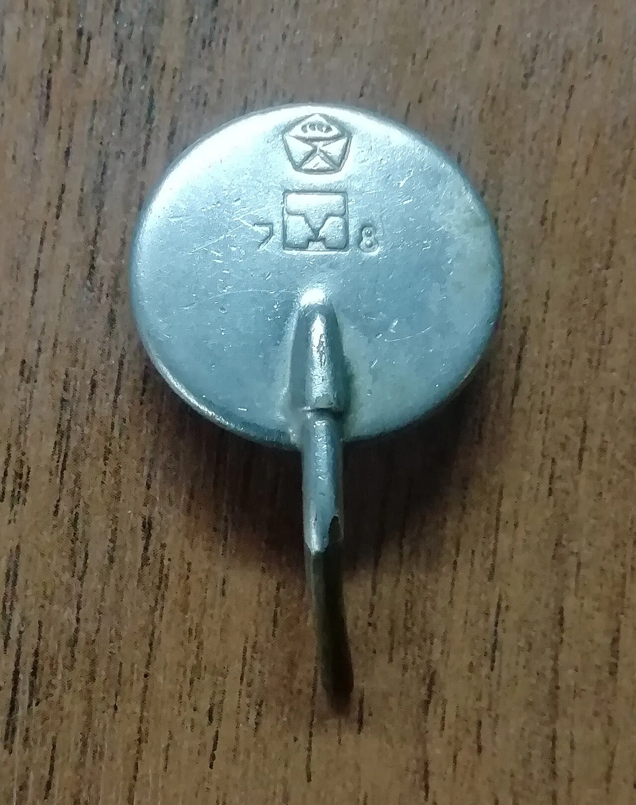
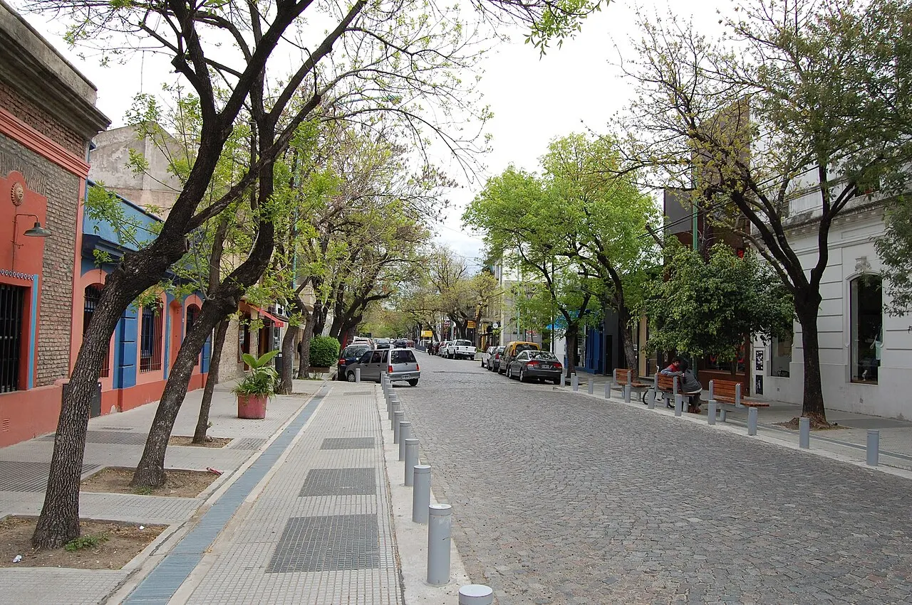
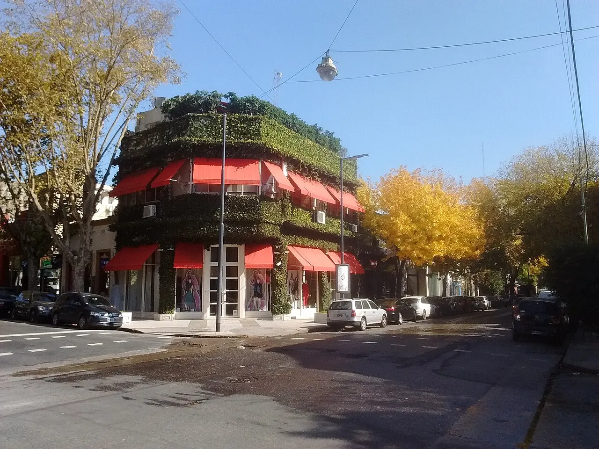
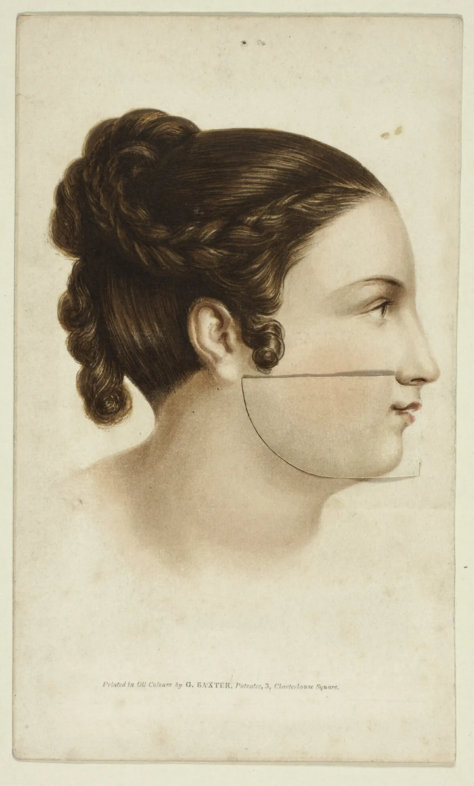

Escribí
Mandanos un WhatsApp con lo que te pasa. Te respondemos en el día con los turnos libres.

Consultorio odontológico a tres cuadras de Plaza Serrano. Presupuesto por escrito antes de empezar, obras sociales y turnos por WhatsApp en el día.
Pedir turnoLimpiezas y controles
 
Mandanos un WhatsApp con lo que te pasa. Te respondemos en el día con los turnos libres.

Te atendemos sin apuro: revisamos, te explicamos qué vemos y, si hace falta, sacamos una radiografía en el consultorio.
Te llevás el plan de tratamiento y el presupuesto por escrito. Empezás cuando quieras, sin compromiso.


Dra. Lucía Ferreyra, odontóloga, M.N. 00000. Atiende en Palermo desde 2012, se especializa en rehabilitación y estética, y cada consulta tiene el tiempo que necesita.El consultorio tiene un sillón, un equipo de radiografía digital y material esterilizado o descartable en cada turno. Hay financiación en hasta seis cuotas con tarjeta para tratamientos largos.

Sí, trabajamos con las principales. Escribinos con el nombre de la tuya y te confirmamos la cobertura y si corresponde reintegro.
Te pasamos el valor actualizado por WhatsApp. Incluye la revisión completa y el presupuesto por escrito; con muchas obras sociales no tiene costo.
Contanos cuando pidas el turno. Vamos a tu ritmo, te explicamos cada paso antes de hacerlo y usamos anestesia siempre que haga falta.
Sí, hasta seis cuotas con tarjeta en ortodoncia, implantes y estética. El plan de pagos queda escrito en el presupuesto.
Sí. Si tenés dolor, una pieza rota o una infección, escribinos y te damos el primer turno libre del día.
En Gorriti 4800, a tres cuadras de Plaza Serrano y a diez del subte D, estación Plaza Italia. Hay estacionamiento en la esquina.
Escribinos por un turno, una urgencia o una duda. Te respondemos en el día.